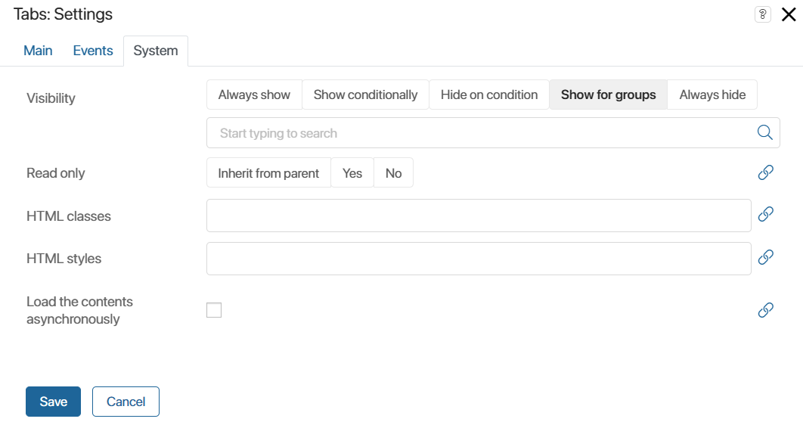
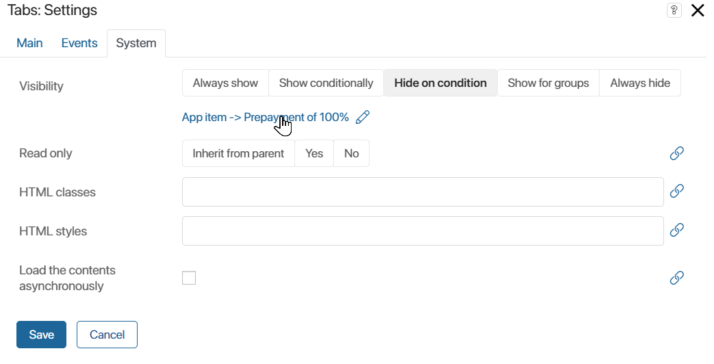
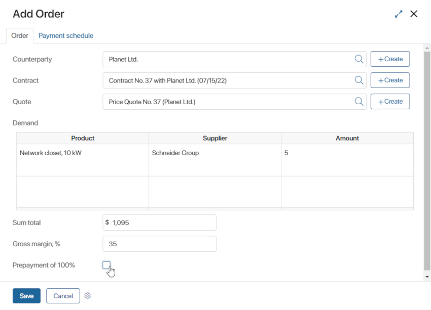

System settings are the same for all the widgets. They are used to configure a widget’s visibility and access to its data, define what happens, when the user moves or hovers the pointer over the widget, etc.
Events tab

On this tab, you can specify a script that will run after a certain event:
- On mouse enter handler. The script runs when the user hovers their mouse over the widget. For example, a pop-up window with a tip may be shown.
- On mouse leave handler. The script runs the user moves their mouse away from the widget. For example, the tip window shown when hovering over the widget may be hidden.
You can use a variable of the Event type in the context of a custom widget to send event data to the parent widget. This variable will then appear on the Events tab. For more information, read the Send an event from a child widget to a parent one article.
To configure the script to be executed:
- Click the Create button next to the desired event.
- Enter the name of the function and click Open.
- Write the script in the opened Scripts tab.
- The script is saved automatically. To exit the interface designer, click Save and Publish.
System tab

- Visibility. Specify when a widget is shown on the form:
- Always show. The widget is always visible to the users.
- Show conditionally, Hide on condition. Specify a condition for hiding or showing the widget. To do that, bind a context variable to this field. For example, select Hide on condition and bind it to a Yes/No switch variable. The widget will be shown to the user if the user selects No when filling out the form. If the user selects Yes, the widget will be hidden. Below you will find an example of how this option is used.
- Show for groups. Select user groups that will be able to see the widget. Users who are not included in these groups will not see the widget.
- Always hide. The widget will remain hidden all the time.
- Read only. Configure access to the widget:
- Inherit from parent. The option is used when you use one widget inside of another. For example, you place the Associated items widget into the Column widget that has the Read only setting. If you select the Inherit from parent option for Associated items, users won't be able to edit the list of items.
- If you select Yes, the user won’t be able to edit the widget’s data.
- Select No to allow users to edit the widget’s data.
- HTML styles. Here you can specify the CSS styles for the widget. For example, to enter its width.
- HTML classes. You can create an HTML style using the Code widget and apply it to the current widget. To apply a style, enter its name specified in the script in this field. You can use the same style in several widgets. For example, you can quickly apply one background color to all widgets on a form.
- Load the contents asynchronously. This option is available for widgets that contain data, for example, Columns, My Tasks, Panel with Header. Enable the option to display content only when the page or app form is fully loaded.
Applying the same background color to several widgets using the HTML classes field
<style>
|
Link with a variable
You can bind the widget settings fields to context variables. This is convenient if you need to dynamically change widget settings on a page or during a business process. To bind a field:
- Click the icon next to the field name. In the Visibility field, select Show conditionally or Hide on condition.
- Click <Not defined>.
- Select a context variable from the drop-down list. The list only displays variables with the same data type as the bound field.
- Save and publish the widget.
The setting is now defined by the selected context variable.
Use case
Let’s say we have the Orders app to handle customers’ requests. For orders without prepayment, it is required to determine the payment schedule. In this case, the sales rep fills out a table with the schedule information on a separate tab. The tab can be hidden or displayed depending on whether the sales rep checks the Prepayment of 100% box or not.
This can be done with the following settings:
- Go to the Orders app menu and click Form Settings.
- In the window that opens, add the following properties on the Context tab: Payments of the Table type and Prepayment of 100% of the Yes/No switch type.
- Go to the Create tab and click <Default>, and then click +Create Form, or Edit Form if the form has been created earlier. The interface designer will open.
- Drag the Tabs widget to the top panel and add the Order and Payment schedule tabs. Add the Prepayment of 100% property to the first tab and the Payments table to the second one.
- Go to the Payment schedule tab’s system settings. In the Visibility field, select the Hide on condition option and bind it with the Prepayment of 100% property.

- Click Save and Publish on the designer top panel.
Now, if the Prepayment of 100% box is unchecked, a new Payment schedule tab will appear on the page, where the user can specify order details. If the Prepayment 100% box is checked, the new tab will not appear.
